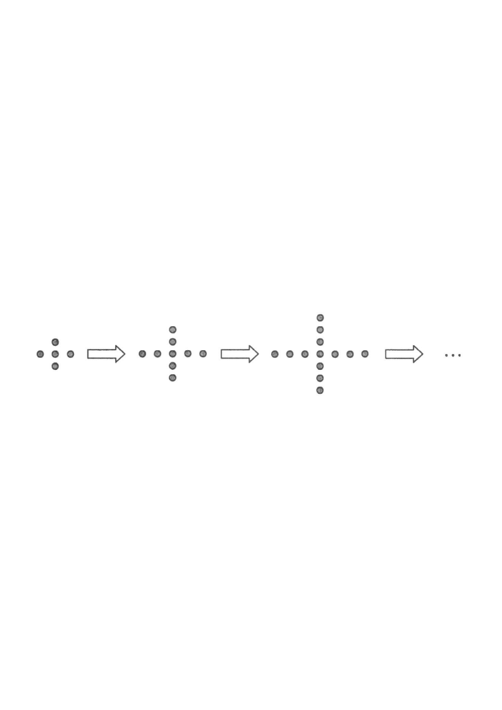

[2015 MC #13]
In the figure, the 1st pattern consists of 5 dots. For any positive integer $n$, the $(n+1)$th pattern is formed by adding 4 dots to the $n$th pattern. Find the number of dots in the 6th pattern.

The 1st pattern has 5 dots,
so $T(1)=5$.
Each later pattern is made by adding exactly 4 dots:
\[ T(n+1)=T(n)+4 \quad \text{for every positive integer } n \]
This is an arithmetic sequence with first term 5 and common difference 4.Pattern 1 (red dots) has $5$ dots:
\[ T(1)=5 \]
The 4 extra dots of pattern 1 form the cross shape around the centre.Going from one pattern to the next adds 4 dots:
\[ T(2)=T(1)+4,\quad T(3)=T(2)+4,\quad T(4)=T(3)+4,\;\dots \]
So $T(6)$ is $T(1)$ plus 4,Substituting step by step:
\[ \begin{aligned} T(6)&=T(5)+4\\ &=T(4)+4+4\\ &=T(3)+4+4+4\\ &=T(2)+4+4+4+4\\ &=T(1)+4+4+4+4+4 \end{aligned}\]
Five "＋4" terms appear because we move from pattern 1 to pattern 6.\[ \begin{aligned} T(6)&=5+4\times 5\\ &=5+20\\ &=25 \end{aligned}\]
Check with the general term of an arithmetic sequence: $T(n)=T(1)+(n-1)d=5+5\times 4=25$.
Common difference $d=4$,The 6th pattern has 25 dots,
which is option B.
A: 21
|
B: 25 ✓
|
C: 29
|
D: 33
Question. The first pattern of a sequence is made of \(3\) dots and each later pattern is made by adding \(5\) dots.
(a) Write down a recurrence relation for the number of dots \(T(n)\) in the \(n\)th pattern.
(b) Find \(T(8)\).